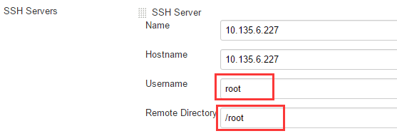

Linux配置SSH公钥认证与Jenkins远程登录进行自动发布
公钥认证，是使用一对加密字符串，一个称为公钥(public key)， 任何人都可以看到其内容，用于加密；另一个称为密钥(private key)，只有拥有者才能看到，用于解密。
在使用jenkins自动构建并远程登录服务器进行发布应用的时候，需要使用SSH公钥认证来解决登录服务器的问题。
其实很简单，只需要两个指令即可。
ssh-keygen -t rsa -P ''
ssh-copy-id -i ~/.ssh/id_rsa.pub <IP>
假设有两台服务器，A是Jenkins构建服务器，B是应用服务器，A构建好应用之后，将包传到B进行发布。
在A上面执行 ssh-keygen -t rsa -P ''， -P后面两个单引号表示密码为空
之后会在~/.ssh目录下创建两个文件id_rsa(私钥),id_rsa.pub(公钥)
接下来继续在A上执行 ssh-copy-id -i ~/.ssh/id_rsa.pub <IP>，表示将公钥发给B，发到B服务器的~/.ssh目录下
之后在用ssh B<ip>尝试能否免密登录B服务器，如果还是提示需要输入密码，则有以下原因
a. 非root账户可能不支持ssh公钥认证（看服务器是否有限制）
b. 传过来的公钥文件权限不够，可以给这个文件授权下 chmod 644 authorized_keys
c. 使用root账户执行ssh-copy-id -i ~/.ssh/id_rsa.pub <IP> 这个指令的时候如果需要输入密码则要配置sshd_config
vi /etc/ssh/sshd_config
修改完后要重启sshd服务
service sshd restart
最后，如果可以SSH IP 免密登录成功说明SSH公钥认证成功。
-------------------------------------------配置插曲 开始--------------------------------------------------
简单步骤总结（用非root用户）：
1. server1 上使用xxx用户 ，先清理之前的ssh登录记录，rm –rf ~/.ssh ， 运行ssh-keygen –t rsa（只需回车下一步即可，无需输入任何密码）。生成认证密钥。
2. server1 上使用 ssh-copy-id xxx@server2_IP（需输入server2密码） , 即会将验证密钥copy至server2（xxx/.ssh/authorized_keys）
3. server1 上使用 ssh xxx@server2_IP 。即可 免密码登录。
4. 相反，即可实现相互免密码登录。
如果最后还是不能实现免密登录，则可以看下 cat /var/log/secure,比如你xxx用户的家目录权限太高：
最后把家目录设置成700即可，注：目录权限调整可能影响应用程序，请谨慎操作
-------------------------------------------配置插曲 结束--------------------------------------------------
接下来进行jenkins的SSH配置，如下

1. server1 上使用haieradmin用户 ，先清理之前的ssh登录记录，rm –rf ~/.ssh ， 运行ssh-keygen –t rsa（只需回车下一步即可，无需输入任何密码）。生成认证密钥。
2. server1 上使用 ssh-copy-id haieradmin@server2_IP（需输入server2密码） , 即会将验证密钥copy至server2（haieradmin/.ssh/authorized_keys）
3. server1 上使用 ssh haieradmin@server2_IP 。即可 免密码登录。
4. 相反，即可实现相互免密码登录。